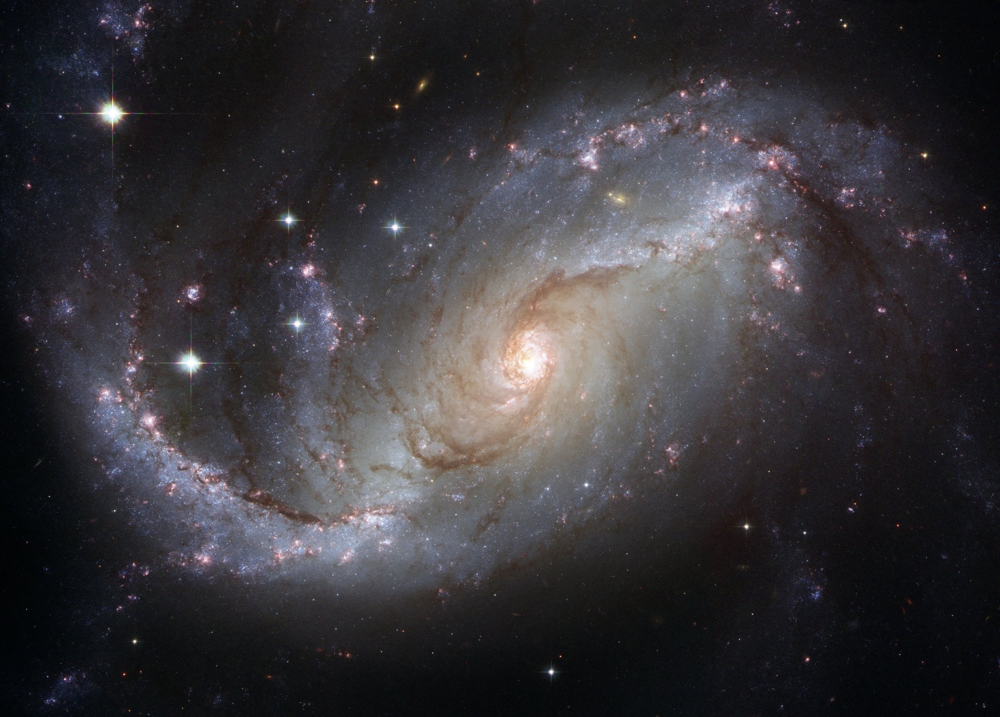

☆ ☆ ☆ ☆ ☆ ☆ ☆ ☆ ☆ ☆ ☆ ☆ ☆ ☆ ☆ ☆ ☆ ☆ ☆ ☆ ☆ ☆ ☆ ☆ ☆ ☆ ☆ ☆ ☆ ☆ ☆ ☆ ☆ ☆ ☆ ☆ ☆ ☆ ☆ ☆ ☆ ☆ ☆
It is the year 2020 you are boarding the new SLS rocket that was created from NASA for an expedition into Space. After sometime you hear the rocket has successfully made it into orbit the dark atmosphere gives you the satisfaction of knowing you are beyond the blue sky that we are accustomed to. The Nebula, Stars, and Galaxies you see will gives you a perspective of what’s beyond the earth. The Captain states you are about to travel into light speed mode, you are now going 299,792 kilometers per second into the abyss of Space.

Credits: Andrews, Alex. “Photo of Deep-Sky Object” Pexels Web. 22 Jan. 2018
Credits: Pixabay. “Gray and Black Galaxy Wallpaper” Pexels Web. 16 May. 2015
Credits: 50s_outerspace.Wav by FreqMan.” Freesound, freesound.org/people/FreqMan/sounds/25752/
Hover your mouse left & right to control the lightspeed.